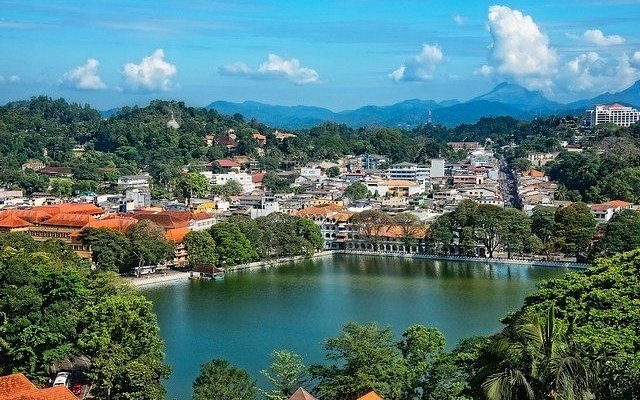

01Mon 2 Nov
Arrival & Kandy by night
An easy first evening after the journey.
- Bahirawakanda Buddha — hilltop sunset views over the city
- Kandyan cultural dance — drumming, costumes, a fire-walking finale
- Temple of the Sacred Tooth Relic — the atmospheric evening ceremony
- Lakeside stroll, then a welcome group dinner